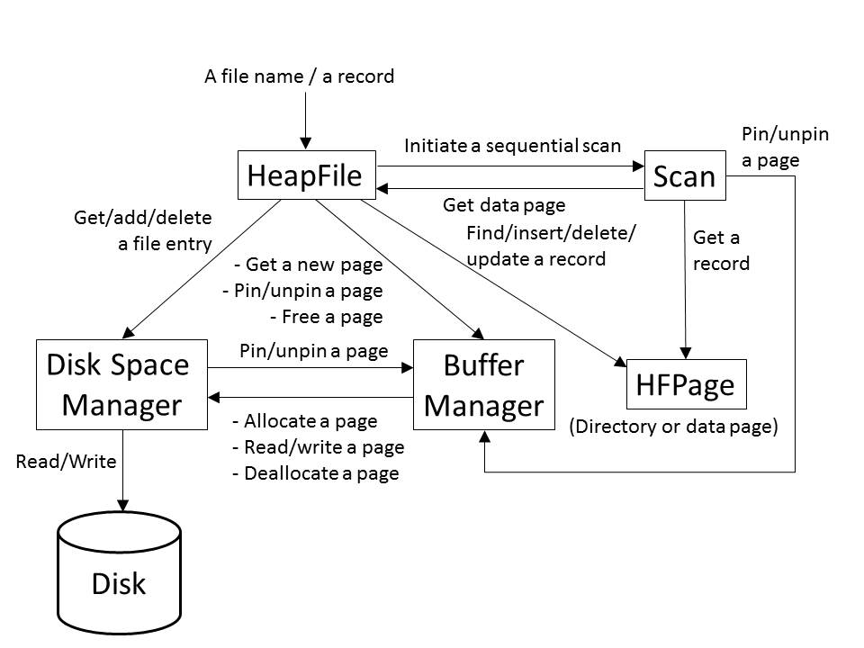

In this assignment, you will implement the page structure for the Heap File layer. You will be given libraries for the lower layers (Buffer Manager and Disk Space Manager), and some driver routines to test the code.
Begin by reading the description of Heap Files in Section 9.5.1, and the description of page formats in Section 9.6. A HeapFile is seen as a collection of records. Internally, records are stored on a collection of HFPage objects.
You will be implementing the HFPage class (as described below) and HeapFile class (as described below) code, as well as the part of the Scan class (as described below) code. Read the description in the text of how variable length records can be stored on a slotted page, and follow this page organization.
Download the zip file (cs560-proj1.tar.gz) for Project 1 and unzip it (e.g., tar xvfz cs560-proj1.tar.gz) into your working directory (~/). Move to ~/proj1/HFPage/src. If you make the project, it will create an executable named hfpage. Right now, it does not work; you will need to fill in the bodies of the HFPage class methods. The methods are defined (empty) in file hfpage.C. Next, move to ~/proj1/HeapFile/src. If you make the project, it will create an executable named heaptest. It does not work, either; you will also need to fill in the bodies of the HeapFile and Scan class methods. The methods are defined (empty) in files heapfile.C and scan.C. There is another hfpage.C in the directory, but indeed you can simply replace it with your hfpage.C.
An expected output of a correct implementation is available in expected_output in ~/proj1/HFPage/src and ~/proj1/HeapFile/src, respectively.
Have a look at the file hfpage.h in ~/proj1/HFPage/include. It contains the interfaces for the HFPage class. This class implements a "heap-file page" object. Note that the protected data members of the page are given to you. All you should need to do is implement the public member functions. You should put all your code into the file hfpage.C.
A note of the slot directory: In the description in the text, the slot directory is located at the end of the page, and grows toward the beginning. This has confused students in the past, since it means that negative offsets into the slot directory have to be used, so the current definition of HFPage has the slot directory at the beginning of the page, after a few fixed member fields, and growing toward the end. This does mean, however, that you will need to write the code so the records themselves are placed beginning at the end of the page. Be very careful with your pointer arithmetic.
Also note that in order to add a record to a page, there has to be a room for the record itself in the data area, and also room for a new slot in the data area (unless there happens to be a pre-allocated slot that's empty).
Please follow the Minibase Error Protocol. An example file illustrating the use of the error protocol is available in ~/proj1/HFPage/src/ErrProc.sample. It covers much of what you need to know about the protocol. You can look at new_error.h for more details. It is in ~/proj1/HFPage/include.
In C++, struct are aggregate data types built using elements of other types. The pageNo identifies a physical page number (something that the buffer manager and the DB layers understand) in the file. The slotNo specifies an entry in the slot array on the page.
DONE is a special code for non-errors that are nonetheless not "OK": it generally means "finished" or "not found." FAIL is for errors that happen outside the bounds of a subsystem.
Have a look at the file heapfile.h in ~/proj1/HeapFile/include. It contains the interfaces for the HeapFile class. This class implements a "heapfile" object. Note that you should implement the public and private member functions, as well as constructor and destructor. You should put all your code into the file heapfile.C. Have a look at the file scan.h in ~/proj1/HeapFile/include. It contains the interfaces for the Scan class. This class implements a "scan" object. Note that you should implement the public and private member functions, as well as constructor and destructor. You should put all your code into the file scan.C.

You are required to turn in your copy of all source files in the handin directory.
This includes all the files needed to make and run your executables — hfpage and heaptest — in ~/proj1/HFPage/src/ and ~/proj1/HeapFile/src, respectively.
We should be able to go to your handin directory, and type make and run the programs (hfpage and heaptest) in the HFPage and HeapFile source directories.
Note that you should not need to change any files other than hfpage.C in ~/proj1/HFPage/src/, and hfpage.C, heapfile.C and scan.C in ~/proj1/HeapFile/src/.
Once you have finished your project, please tar your directory (i.e., proj1.tar) and email to Mina minakazemimanesh@email.arizona.edu the tar file.
Please remember late submissions will not be accepted. Make sure to start early!
HFPage class
Public methods
void HFPage::init(PageId pageNo)
This member function is used to initialize a new heap file page with page number pageNo. It should set the following data members to reasonable defaults: nextPage, PrevPage, slotCnt, curPage, usedPtr, freeSpace. You will find the definitions of these data members in hfpage.h. The nextPage and prevPage data members are used for keeping track of pages in a HeapFile.
A good default unknown value for a PageId is INVALID_PAGE, as defined
in page.h. Note that usedPtr is an offset into the data array, not a pointer.
PageId HFPage::getPrevPage()
This member function should return the page id stored in the prevPage data member.
void HFPage::setPrevPage(PageId pageNo)
This member function sets the prevPage data member.
PageId HFPage::getNextPage()
This member function should return the page id stored in the nextPage data member.
void HFPage::setNextPage(PageId pageNo)
This member function sets the nextPage data member.
Status HFPage::insertRecord(char* recPtr, int reclen, RID& rid)
This member function should add a new record to the page. It returns OK if everything went OK, and DONE if sufficient space does not exist on the page for the new record. If it returns OK, it should set rid to be the RID of the new record (otherwise it can leave rid untouched.) Please note in the parameter list recPtr is a char pointer and RID& denotes passed by reference.
The Status enumerated type is defined in new_error.h if you're curious about it. You may want to look that file over and handle errors in a more informative manner than suggested here.
The RID struct is defined to be:
Struct RID {
PageID pageNo;
int slotNo;
int operator == (const RID rid) const
{ return (pageNo == rid.pageNo) && (slotNo == rid.slotNo); };
int operator != (const RID rid) const
{ return (pageNo != rid.pageNo) || (slotNo != rid.slotNo); };
friend ostream& operator << (ostream& out, const struct RID rid);
};
Status HFPage::deleteRecord(const RID& rid)
This member function deletes the record with RID rid from the page, compacting the hole created. Compacting the hole, in turn, requires that all the offsets (in the slot array) of all records after the hole be adjusted by the size of the hole, because you are moving these records to "fill" the hole. You should leave a "hole" in the slot array for the slot which pointed to the deleted record, if necessary, to make sure that the rids of the remaining records do not change. The slot array can be compacted only if the record corresponding to the last slot is being deleted. It returns OK if everything goes OK, or FAIL otherwise. (what could go wrong here?)
Status HFPage::firstRecord(RID& firstRid)
This routine should set firstRid to be the rid of the "first" record on the page. The order in which you return records from a page is entirely up to you. If you find a first record, return OK, else return DONE.
Status HFPage::nextRecord(RID curRid, RID& nextRid)
Given a valid current RID, curRid, this member function stores the next RID on the page in the nextRid variable. Again, the order of your return records is up to you, but do make sure you return each record exactly once if someone continually calls nextRecord! Don't worry about changes to the page between successive calls (e.g. records inserted to or deleted from the page). If you find a next RID, return OK, else return DONE. In case of an error, return FAIL.
Status HFPage::getRecord(RID rid, char * recPtr, int& recLen)
Given a rid, this routine copies the associated record into the memory address *recPtr. You may assume that the memory pointed by *recPtr has been allocated by the caller. RecLen is set to the number of bytes that the record occupies. If all goes well, return OK, else return FAIL.
Status HFPage::returnRecord(RID rid, char*& recPtr, int& recLen)
This routine is very similar to HFPage::getRecord, except in this case you do not copy the record into a caller-provided pointer, but instead you set the caller's recPtr to point directly to the record on the page. Again, return either OK or FAIL.
int HFPage::available_space(void)
This routine should return the amount of space available for a new record that is left on the page. For instance, if all slots are full and there are 100 bytes of free space on the page, this method should return (100 - sizeof(slot_t)) bytes. This accounts for the fact that sizeof(slot_t) bytes must be reserved for a new slot and cannot be used by a new record.
bool HFPage::empty(void)
Returns true if the page has no records in it, and false otherwise.
HeapFile class
Constructor and destructor
HeapFile::HeapFile( const char *name, Status& returnStatus )
Constructor. If the name already denotes a file, the file is opened; otherwise, a new empty file is created.
HeapFile::~HeapFile()
Deconstructor.
Public methods
int HeapFile::getRecCnt()
This routine returns the number of records in this heapfile.
Status HeapFile::insertRecord(char *recPtr, int recLen, RID& outRid)
This routine inserts a record into the heapfile.
Status HeapFile::deleteRecord (const RID& rid)
This routine deletes the specified record from the heapfile.
Status HeapFile::updateRecord (const RID& rid, char *recPtr, int recLen)
This routine updates the specified record in the heapfile.
Status HeapFile::getRecord (const RID& rid, char *recPtr, int& recLen)
This routine reads record from the heapfile, returning pointer and length.
class Scan *HeapFile::openScan(Status& status)
This routine initiates and returns a sequential scan.
Status HeapFile::deleteFile()
This routine wipes out the heapfile from the database permanently.
Private methods
Status HeapFile::newDataPage(DataPageInfo *dpinfop)
This routine gets a new datapage from the buffer manager and initialize dpinfo.
Status HeapFile::findDataPage(const RID& rid, PageId &rpDirPageId, HFPage *&rpdirpage, PageId &rpDataPageId,HFPage *&rpdatapage, RID &rpDataPageRid)
This routine, as an internal HeapFile function used in getRecord and updateRecord, returns pinned directory page and pinned data page of the specified user record (rid).
Status allocateDirSpace(struct DataPageInfo * dpinfop, PageId &allocDirPageId, RID &allocDataPageRid)
This routine allocates directory space for a heapfile page.
Scan class
Constructor and destructor
Scan::Scan (HeapFile *hf, Status& status)
The constructor pins the first page in the file and initializes its private data members with the given hf.
Scan::~Scan()
The destructor unpins all the pages in the file.
Public methods
Status Scan::getNext(RID& rid, char *recPtr, int& recLen)
This routine retrieves the next record in a sequential scan and returns the RID of the retrieved record.
Private methods
Status Scan::init(HeapFile *hf)
This routine does all the constructor work.
Status Scan::reset()
This routine resets everything and unpin all pages.
Status Scan::firstDataPage()
This routine gets the first data page in the file. (It copies over data about first page.)
Status Scan::nextDataPage()
This routine retrieves the next data page in the file.
Status Scan::nextDirPage()
This routine retrieves the next directory page in the file.
Component Diagram